绣品卡展示 01
绣品卡展示 01Digital Gallery
文创数字展厅
按类别浏览红安绣活文创成果，完整查看绣品卡、纹样设计稿和语音明信片系列。
Creative Cards
绣品卡展示
以红安景点和非遗纹样为视觉线索，把旅途记忆转化为可收藏、可传播的文创卡片。
绣品卡展示 01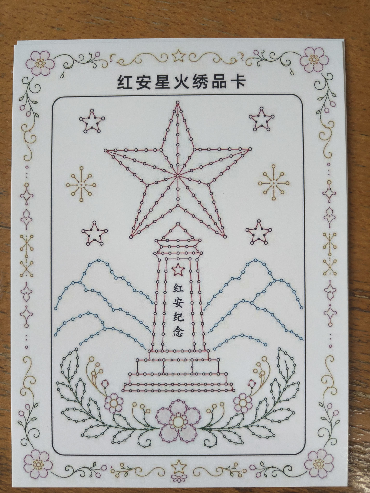
绣品卡展示 02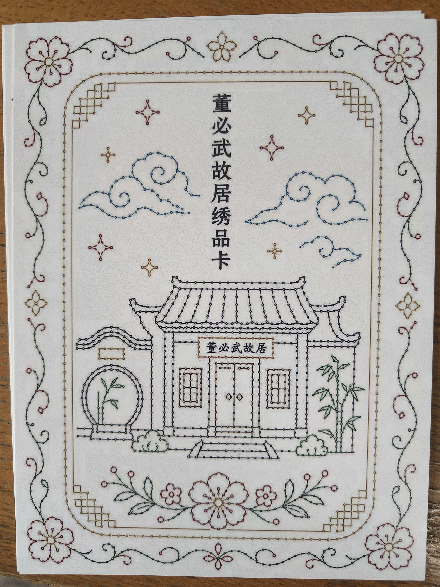
绣品卡展示 03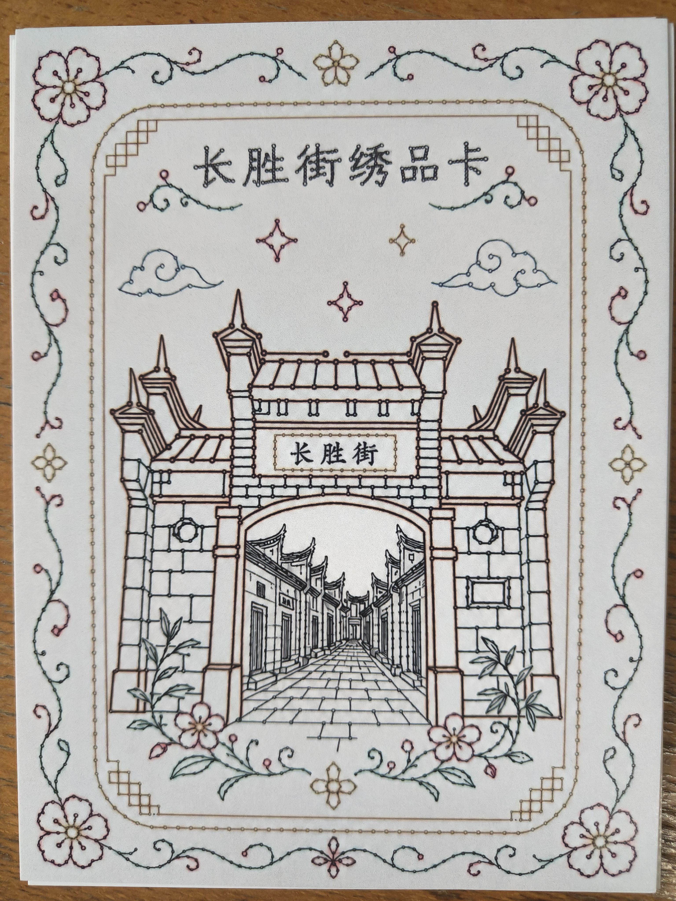
绣品卡展示 04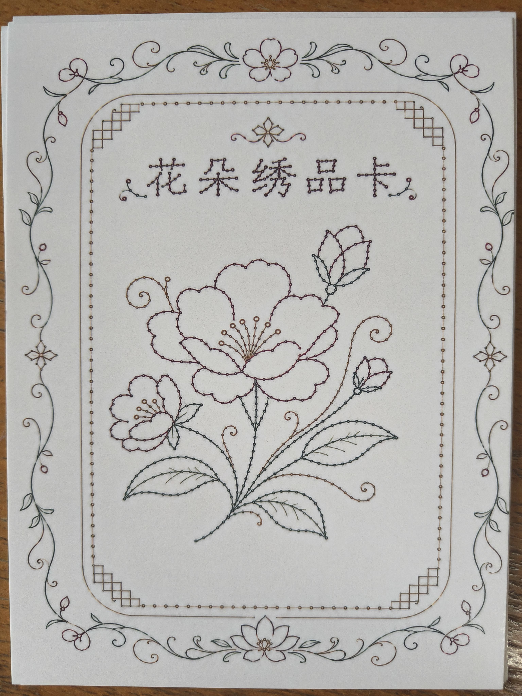
绣品卡展示 05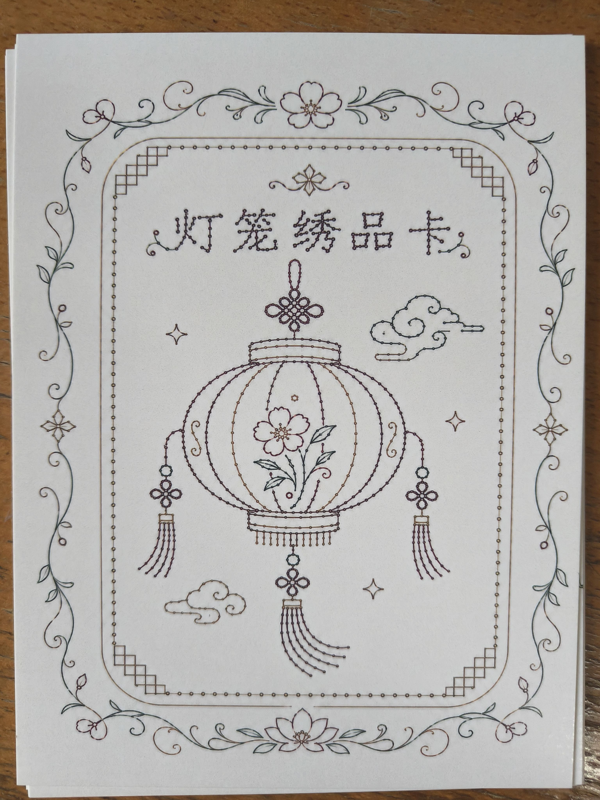
绣品卡展示 06Pattern Drafts
纹样设计稿
记录针脚路径、景点轮廓和纹样构思，呈现文创从设计草图到体验成品的过程。
 纹样设计稿 01
纹样设计稿 01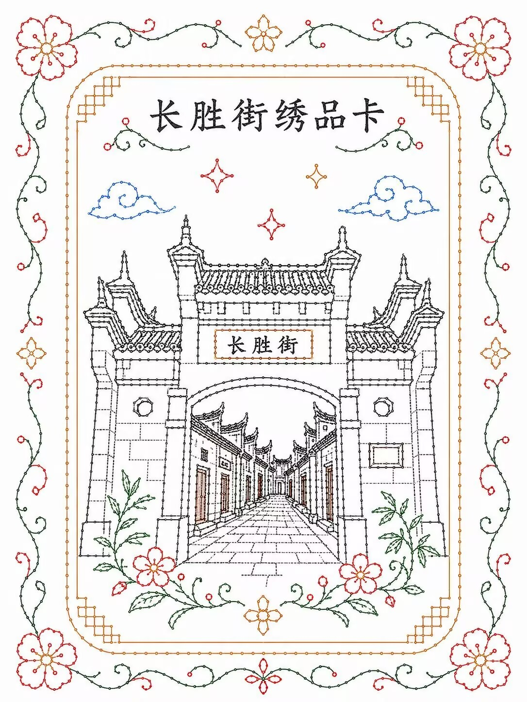
纹样设计稿 02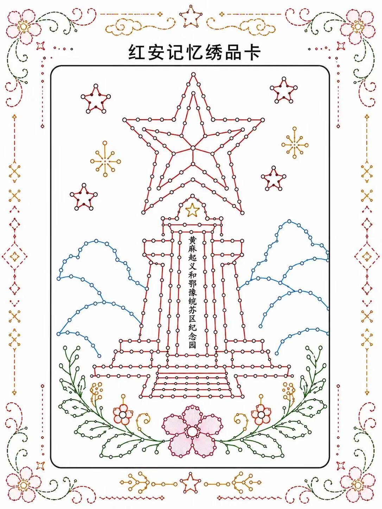
纹样设计稿 03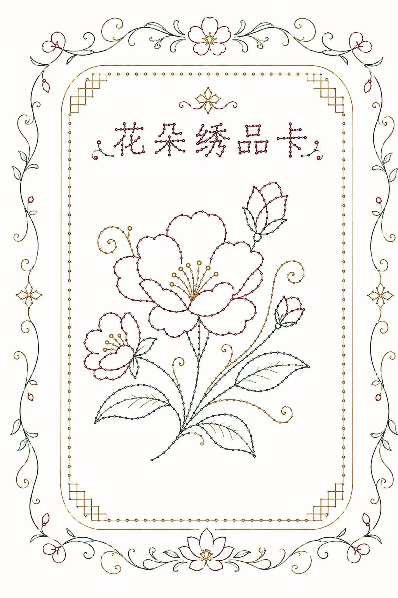
纹样设计稿 04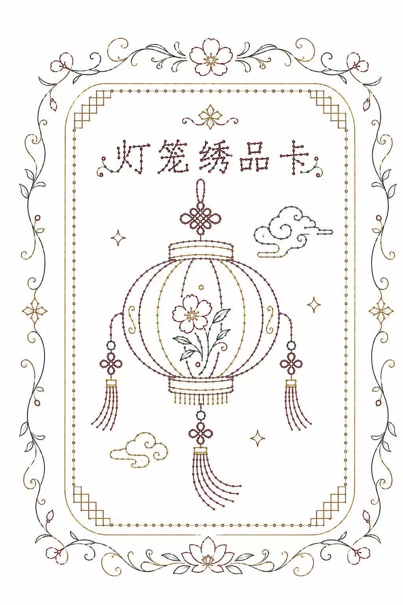
纹样设计稿 05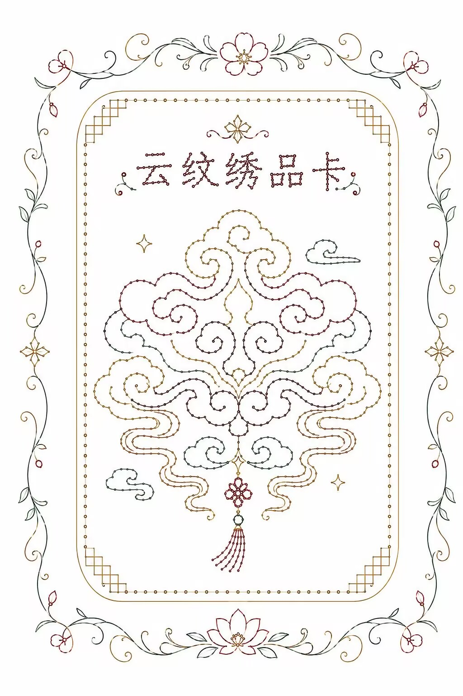
纹样设计稿 06Audio Postcards
语音明信片
用图像承载红安景点，用扫码语音延展红色故事，让旅途记忆可以被再次聆听。
 语音明信片 01
语音明信片 01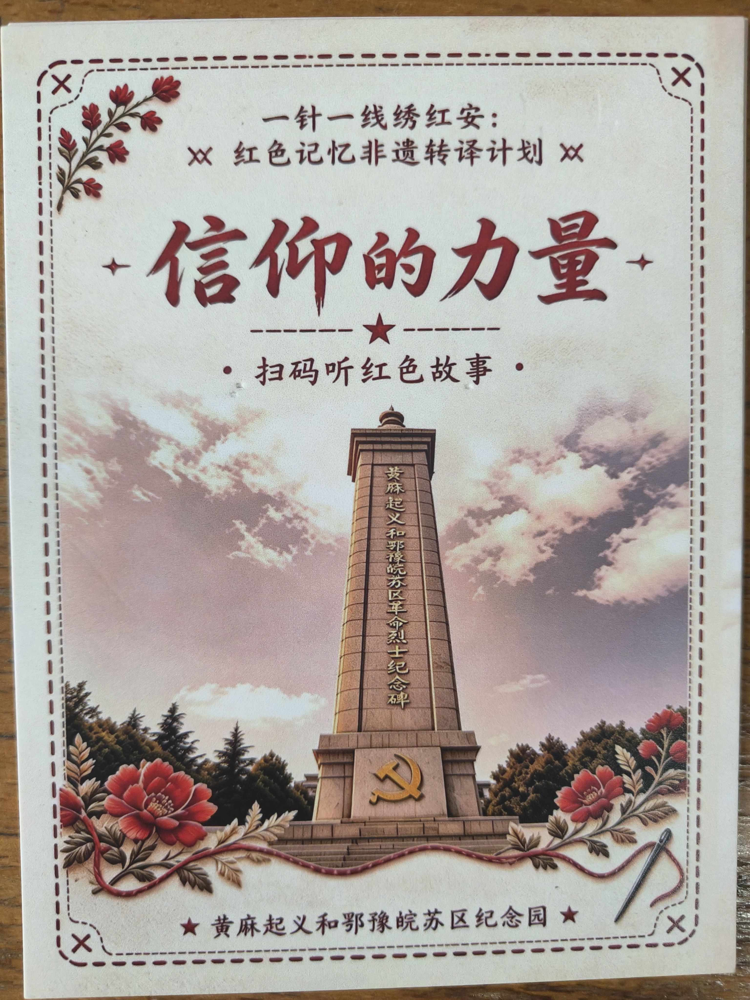
语音明信片 02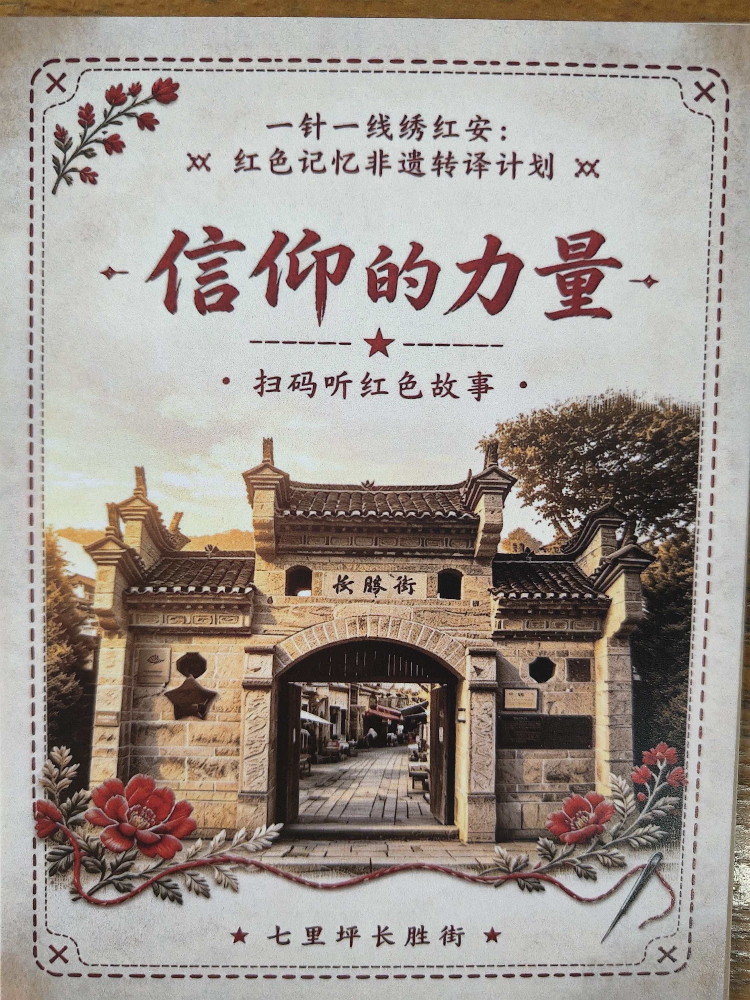
语音明信片 03